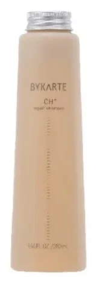
CH+
リペアシャンプー CH+普通〜硬い髪
やわらかな洗い上がり
シャンプー ¥4,180
詳しく見る
- 成分
- PPT 系の洗浄成分 ケラチンとシルク由来の成分 サルフェートとシリコーンは不使用
- 容量と価格
- 75mL ¥1,320／280mL ¥4,180／600mL ¥6,820
SALON HAIR CARE BY HOYU, JAPAN
目指すのは 傷みを知らない まっさらな素髪
18combinations
名前は 医療の「カルテ」から 美容師を髪のお医者さんにたとえ 一人ひとりの髪を記録して向き合う という考え方です
シャンプーは髪質で トリートメントは仕上がりで 洗い流さないケアは質感で選び 18 通りの組み合わせから決めます
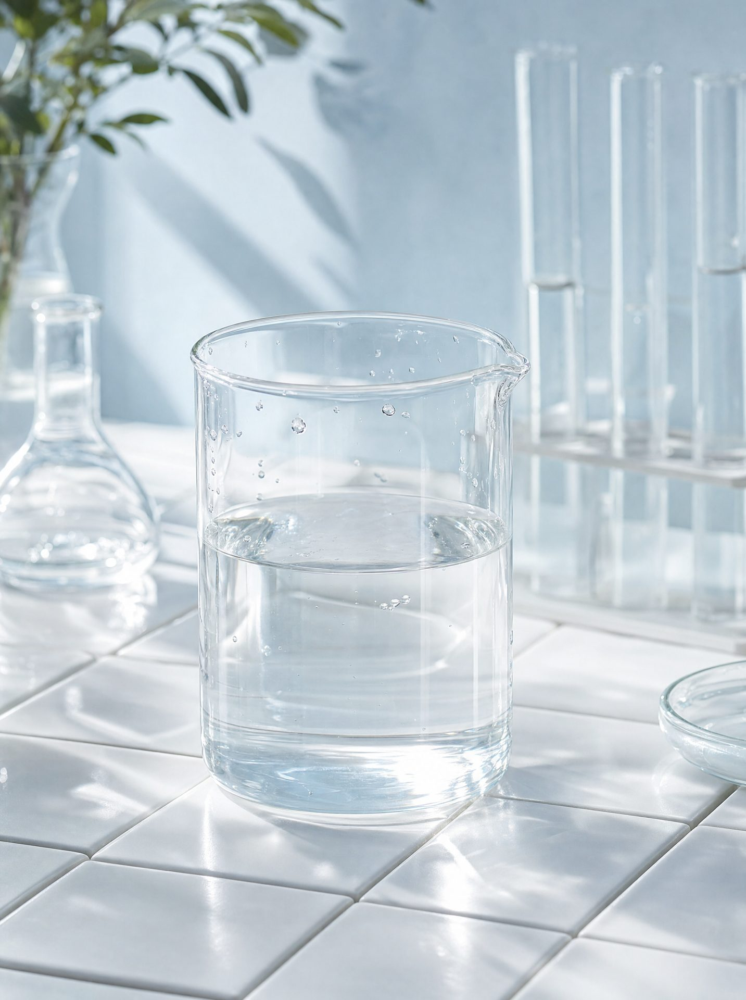
THE TECHNOLOGY
シスチンは 髪の強さとしなやかさを支える成分 カラーや紫外線で減ると 髪の内側が空洞のようになります
ホーユー独自の CiP SHOT は シスチンがアルカリ性で溶け 弱酸性で固まる性質を使って 髪の内側に補う技術 サロンの施術で使われます 家で使う品は その仕上がりを保ち 次の施術に備える役目です
OUR COMMITMENT
WHAT HAPPENS IN YOUR HAIR
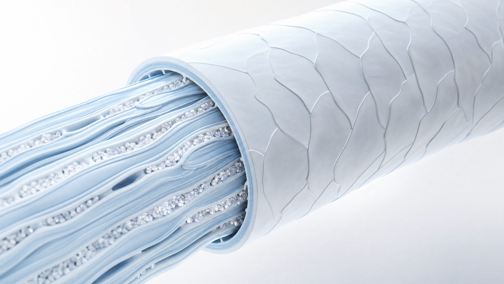
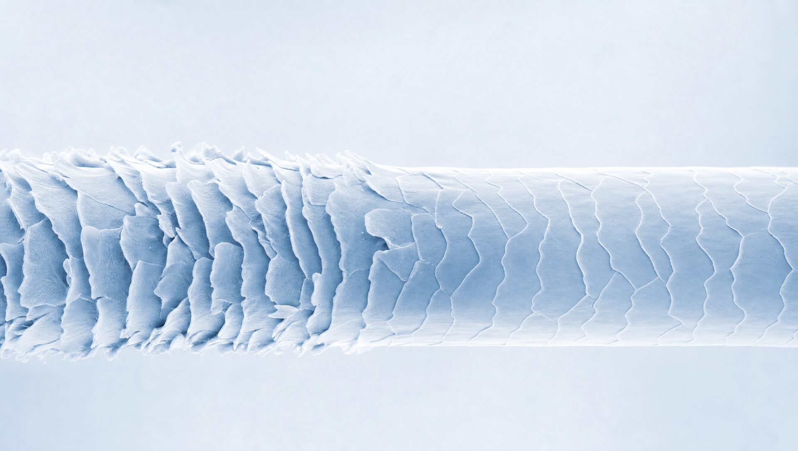
画像はイメージです
THE LINES

CH+
やわらかな洗い上がり
シャンプー ¥4,180
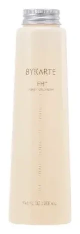
FH+
しなやかな洗い上がり
シャンプー ¥4,180
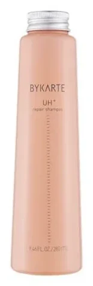
UH+
さっぱりした洗い上がり
シャンプー ¥4,180
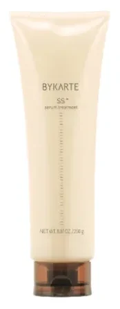
SS+
指通りのよい仕上がり
トリートメント ¥4,180
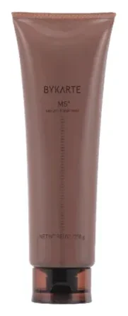
MS+
うるおいがあり やわらかくまとまる
トリートメント ¥4,180
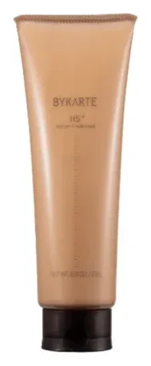
HS+
しっとり なめらかな高補修
トリートメント ¥4,180
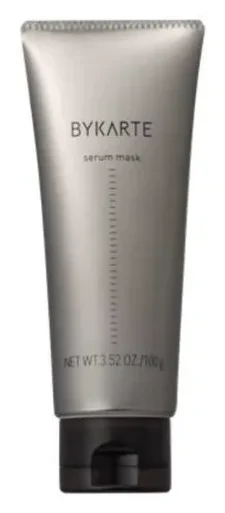
MASK
サロンの仕上がりを長持ちさせる
マスク ¥2,420
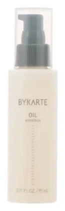
OIL
熱と紫外線から髪を守る
オイル ¥3,300
価格はメーカー公式の定価（税込・2026 年 10 月確認） 容量やほかの品は店頭でご案内します 全商品を見る →
HOW TO USE
IN THE SALON
サロンでは 何段階かの薬剤を重ねるシステムトリートメントを行います シスチンを補う CiP SHOT は この施術で使われる技術です
家でのケアは 施術の仕上がりを保ち 次の施術に備える役目です
THE STORY
ヘアカラーで知られるホーユーが 補修の分野に踏み出して生まれたブランド
外装はシンプルな形の中で 表面の色や加工にこだわり シャンプーのポンプは箱に同梱しています
AT SEAM
SEAM GINZA は ONE GINZA 3F 銀座一丁目駅 7 番出口から徒歩 1 分
スタッフが髪を見て ラインと使う順番をご案内します 全 7 店で免税対応 パスポートをお持ちください